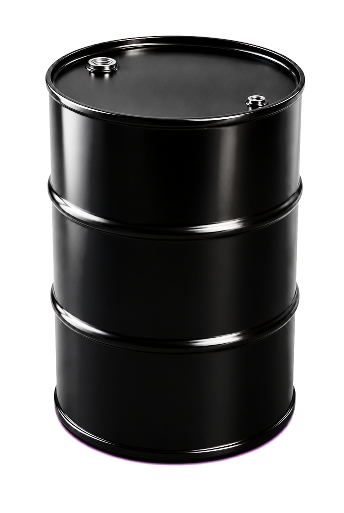
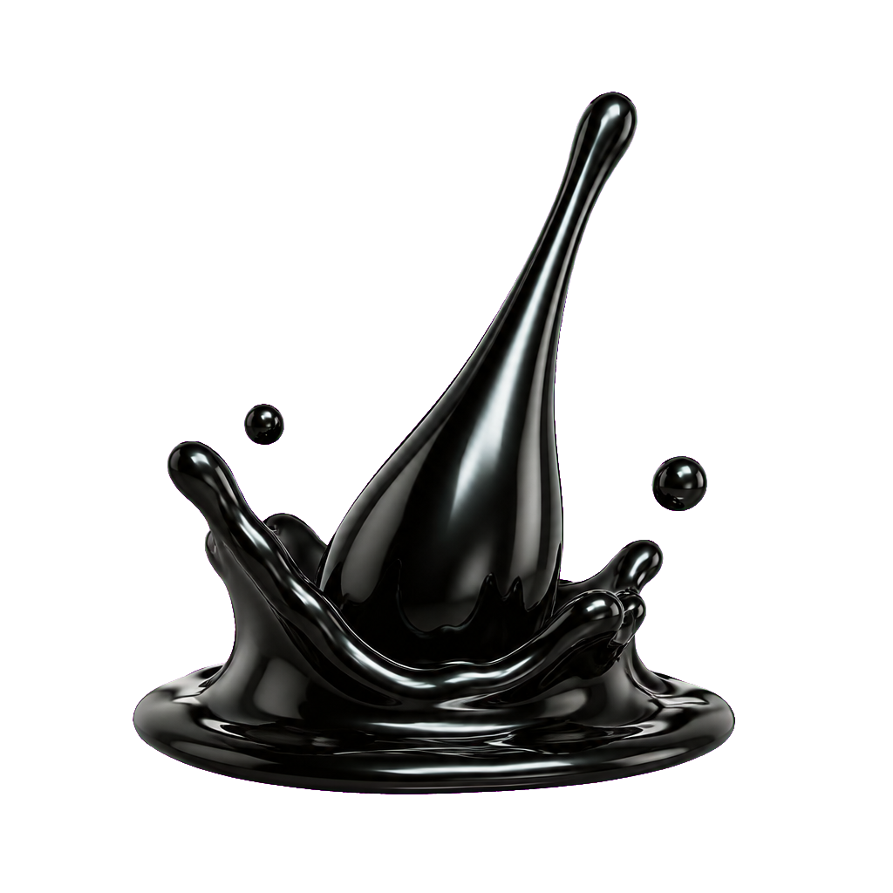
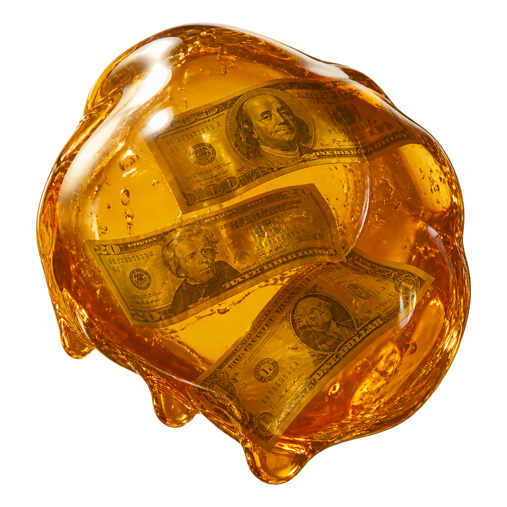
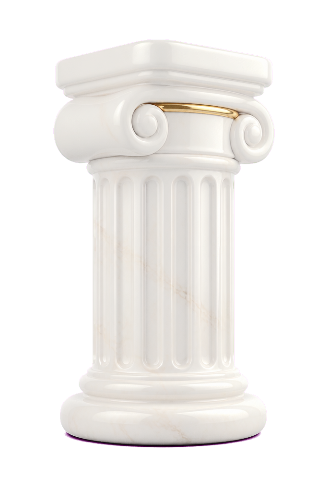
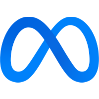

APR 28 · 2026
TODAY'S
MARKETIN 30s
MARKETIN 30s
TECH
IS
LEADING.
PRE-MARKET · FUTURES
NDX
NASDAQ 100
↑ +1.30%
0.00

SPX
S&P 500
↑ +0.80%
0.00
RECORDHIGH
TECH
NDX · MTD
+8.40%
VS
DOW
DJI · MTD
+0.10%
Investors are watching
Cracks
under the surface
The other story


BRENT $93 ↑

STICKY

FED’S PATH



THE BOTTOM LINE
BULLISH
MEGA-CAP TECH
CAUTIOUS
REST OF THE MARKET
FOCUSED
OIL
EARNINGS
FED

SEE YOU
TOMORROW.
TOMORROW.
DAILY MARKET PULSE · BLOOM